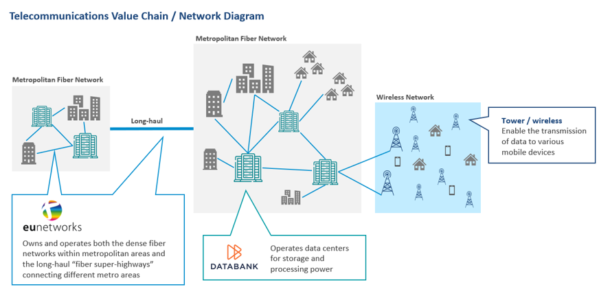

Harnessing the digital wave: A conversation with IMCO's Global Infrastructure team
With the recent recapitalization of euNetworks, we caught up with IMCO's Principal in Infrastructure, Kenneth Koon, to discuss the role of digital infrastructure assets within IMCO's Global Infrastructure portfolio.
Let's start with an overview of IMCO's digital infrastructure strategy. Why is it an important asset?
Kenneth: Digital infrastructure forms the foundation of the digital economy and enables the digital technology we depend on in every sphere of our lives - from remote work and banking to communication and e-commerce - this asset class is critically important. We see tremendous growth in this space, and forecast data demand doubling by 2025, fueled by content generation and consumption requirements, advancing technology, adoption of 5G and artificial intelligence ("AI").
Digital infrastructure assets also behave differently to macroeconomic factors compared with traditional infrastructure assets, adding desirable diversification benefits to our portfolio. For example, during the Covid-19 pandemic, digital infrastructure assets were extremely resilient, retained their strong momentum while transportation assets (airport, roads, ferries) faced operating challenges due to financial stress.
Why is investing in digital infrastructure a good idea for clients?
Kenneth: Ten years ago, digital infrastructure was not viewed as an important asset class whereas now it is considered mission-critical and forms a growing part of institutional portfolios. AI-adoption is growing faster than anyone anticipated and investing in digital infrastructure enables our clients to capture the tailwinds of emerging AI-technologies without taking on unnecessary risks.
Since its initial foray into the digital space in 2018, IMCO has acquired the necessary expertise and established a global network of partners to invest in the sector and is well-positioned to capitalize on the next wave of growth.
Can you tell us about some of IMCO's digital infrastructure assets?
Kenneth: Broadly speaking, digital infrastructure assets can be categorized in three main buckets: storage and processing (datacenters, distributed servers), transmission (fiber, satellites, home internet) and wireless (mobile operators, towers, land leases, Wi-Fi, spectrum). The digital sector offers a wide array of investment opportunities in different asset types, size, growth, and risk on a global basis. From an electricity value chain perspective, the equivalent would be power plants, transmission lines and electricity distribution systems.
In 2022, IMCO invested in DataBank, the largest edge (proximity to end-user) datacenter operator in the US. DataBank continues to set itself apart from competitors due to its strategic role in the increasingly de-centralized digital landscape. Their unique portfolio of datacenters located in key growth markets and highly experienced management team make it a top-tier digital infrastructure platform. Since our investment, the company's contracted capacity (MW) has notably increased, in part driven by an acceleration of the demand for our sites and early adoption of AI which requires significant edge processing power.
In the second category of transmission (fiber networks), IMCO is invested in euNetworks, a pan-network operator. Since our initial investment in 2018, we transitioned from being a passive investor to having direct ownership with meaningful governance over the company alongside our partner Stonepeak. Together we enabled several positive changes, including elevating the ESG agenda, supporting carbon foot printing and implementing DE&I initiatives. Like Databank, euNetworks is seeing the emergence of AI-related demand and the company's network footprint is expected to play a vital role in the rollout of AI applications across Europe.
We expect digital infrastructure to continue to shape the construction of our portfolio. We have a robust pipeline of opportunities globally and are looking at other asset types that could provide diversification and strong risk-adjusted return.